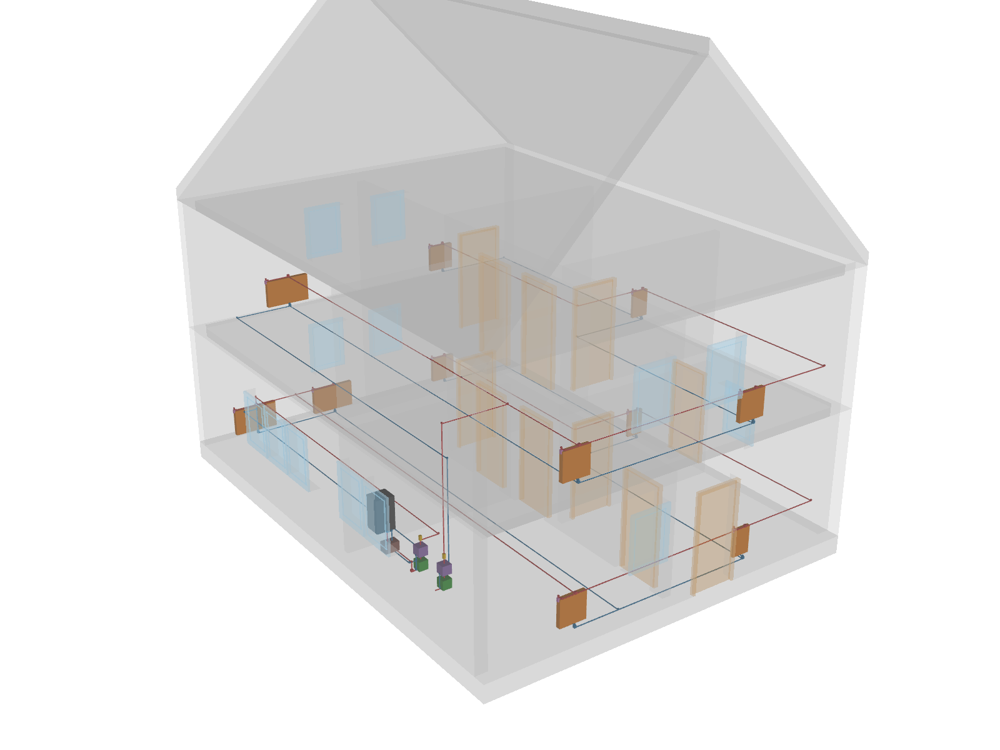
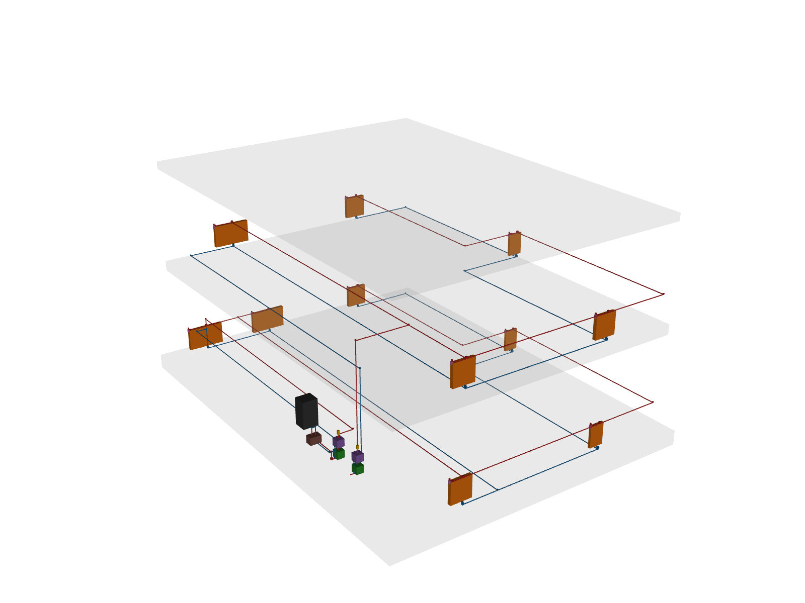
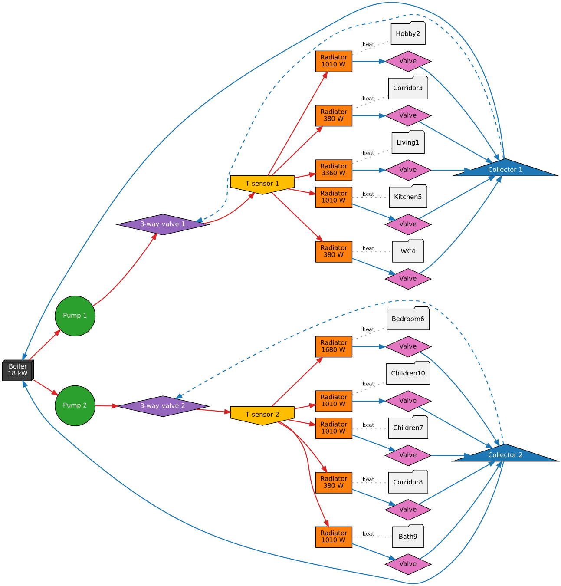

Heating model
This tutorial shows how ifctrano translates a hydronic heating system modelled in BIM into a trano model. The example
combines two federated IFC4 models of the same house: the architecture model ExampleHOM.ifc and a heating discipline
model sharing its project, site, building and storeys.
The heating model follows common IFC4 MEP practice: a gas condensing boiler (IfcBoiler), two heating circuits
(ground floor and first floor), each with a circulator (IfcPump), a three-way mixing valve (IfcValve, MIXING) and
a flow temperature sensor (IfcSensor), and eleven panel radiators (IfcSpaceHeater, RADIATOR) with thermostatic
radiator valves. Elements are connected with pipe segments and fittings through IfcDistributionPorts, grouped in
supply and return IfcDistributionSystems, and typed with the standard property sets
(Pset_SpaceHeaterTypeCommon.OutputCapacity, Pset_BoilerTypeWater.HeatOutput, Pset_PumpTypeCommon.FlowRateRange,
...).

The heating network on its own, with supply pipes in red and return pipes in blue. The boiler, circulators (green) and mixing valves (purple) are in the kitchen; the radiators (orange) are placed in the rooms.

The heating model is generated by tests/hvac/example_hom_heating.py and can be written to a file with:
Generate the model
The heating model is passed next to the architecture model:
or with Python:
from pathlib import Path
from ifctrano.building import Building
building = Building.from_ifc(
Path("ExampleHOM.ifc"), hvac_file_paths=[Path("ExampleHOM_heating.ifc")]
)
building.save_model(library="Buildings")
Heating elements contained in the architecture file itself are also taken into account, so single-file models work
without --hvac.
What ifctrano does
- Network: the port connections are turned into a directed graph. Pipes, fittings, isolating valves and sensors only carry connectivity; heat generators, circulators, mixing valves and radiators are the active components.
- Spaces: each radiator is assigned to the space it is referenced in (
IfcRelReferencedInSpatialStructure, matched by GlobalId across the federated models) or, when the model has no such relation, to the space whose footprint contains it. - Circuits: radiators fed by the same heat generator through the same circulator and mixing valve form a circuit. Each circuit becomes trano's hydronic circuit: pump, three-way valve, temperature sensor, radiators with their valves, and a collector returning to the boiler.
- Parameters: the radiators of a space are lumped into one emitter whose nominal power is the sum of their
OutputCapacity(the living room has two 1680 W radiators). The boiler power comes fromHeatOutputand the pump nominal flow and head fromFlowRateRangeandFlowResistanceRange.
The resulting hydronic model, as generated by trano, is shown below. Supply connections are in red, return connections in blue, and the dashed lines are the bypasses of the three-way valves.

The same information is available in the configuration generated by ifctrano config ExampleHOM.ifc --hvac
ExampleHOM_heating.ifc. Each heated space gets its emission:
spaces:
- id: space_living1_v3g
emissions:
- radiator:
id: radiator_space_living1_v3g
parameters:
nominal_heating_power_positive_for_heating: 3360.0
- valve:
id: valve_space_living1_v3g
control:
emission_control:
id: emission_control_space_living1_v3g
and the boiler and circuits are described in the systems section (ground floor circuit shown):
systems:
- boiler:
id: boiler_1
variant: without_storage
control:
boiler_control:
id: boiler_control_boiler_1
parameters:
nominal_heating_power: 18000.0
inlets:
- split_valve_1
- split_valve_2
- pump:
id: pump_1
control:
collector_control:
id: collector_control_pump_1
parameters:
dp_nominal: 40000.0
m_flow_nominal: 0.25
inlets:
- boiler_1
- three_way_valve:
id: three_way_valve_1
control:
three_way_valve_control:
id: three_way_valve_control_1
inlets:
- split_valve_1
- pump_1
outlets:
- temperature_sensor_1
- temperature_sensor:
id: temperature_sensor_1
outlets:
- radiator_space_corridor3_n2a
- radiator_space_hobby2_uxa
- radiator_space_kitchen5_dsw
- radiator_space_living1_v3g
- radiator_space_wc4_pwg
- split_valve:
id: split_valve_1
inlets:
- valve_space_corridor3_n2a
- valve_space_hobby2_uxa
- valve_space_kitchen5_dsw
- valve_space_living1_v3g
- valve_space_wc4_pwg
outlets:
- boiler_1
Incomplete models
Real models often lack part of this information. ifctrano keeps going and records every assumption, which is logged
and available in building.heating.assumptions:
- a radiator not connected to a heat generator becomes an ideal emitter;
- a circuit without its own circulator or mixing valve gets the default ones of trano's circuit template;
- a missing
OutputCapacity,HeatOutputor pump range falls back to trano's default value (the boiler power falls back to the sum of the radiators it serves); - IFC4 has no heat-pump class: heat pumps exported as
IfcUnitaryEquipmentare recognised from their name, otherwise they are modelled as a boiler.
The figures of this page are generated by docs_src/heating_figures.py.